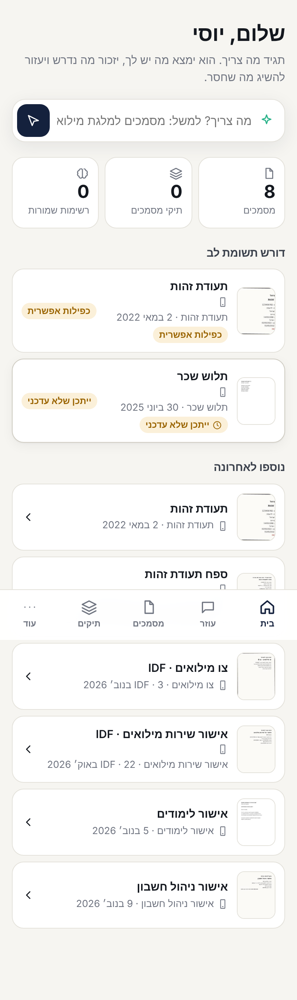
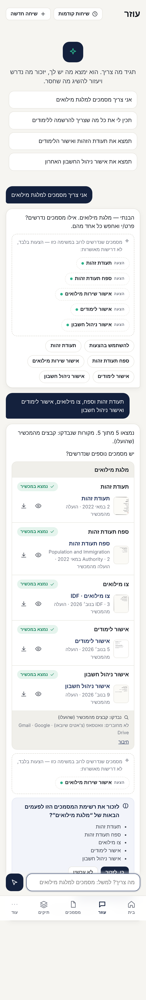
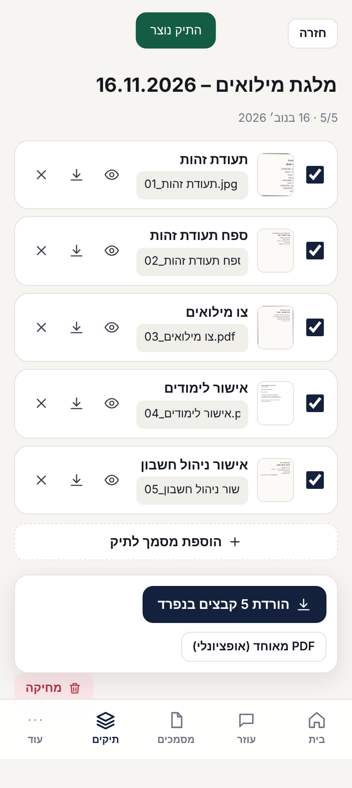
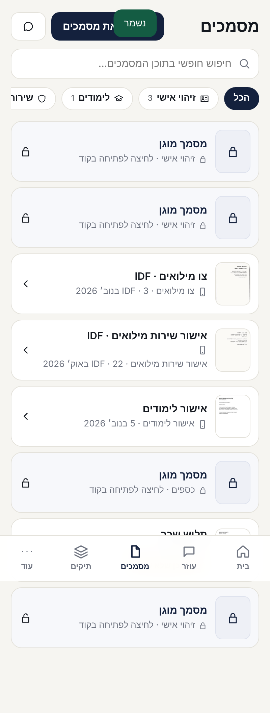
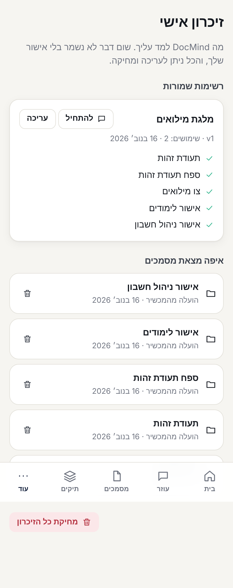

תגיד מה צריך.
הוא ימצא מה יש לך.Tell it what you need.
It finds what you have.
עוזר מסמכים אישי בעברית ובאנגלית: מזהה תעודת זהות, צו מילואים, אישור לימודים ועוד, גם כששם הקובץ הוא IMG_2026…. זוכר מה נדרש לכל תהליך, ומכין תיק מסמכים להורדה.A Hebrew/English personal document assistant: recognises ID cards, reserve orders, enrollment proofs and more, even when the file is called IMG_2026…. It remembers what each process needs and prepares a bundle to download.





מה הוא עושה
What it does
לא עוד תיקייה בענן. עוזר שמבין מה צריך ומכין את זה בשבילך.
Not another cloud folder: an assistant that understands what you need and prepares it.
מוצא לפי תוכן
Finds by content
זיהוי טקסט מקומי בעברית ובאנגלית וסיווג ל-30 סוגי מסמכים, גם לסריקות ולצילומי טלפון.
Local Hebrew/English OCR and classification into 30 document types, including scans and phone photos.
זוכר מה נדרש
Remembers what's needed
"מלגת מילואים", "משכנתא", "דמי אבטלה". בפעם הבאה הוא מתחיל מהרשימה ושואל מה השתנה. שום דבר לא נשמר בלי אישורך.
"Reserve scholarship", "mortgage", "unemployment": next time it starts from your list and asks what changed. Nothing is saved without your approval.
תיק מסמכים להורדה
Download-ready bundles
כל קובץ בנפרד עם שם מסודר, בלי ZIP. PDF מאוחד רק אם רוצים.
Each file separately with tidy names, no ZIP. A combined PDF only if you want one.
אומר מאיפה להשיג
Says where to get it
רק אחרי שחיפש בכל המקורות, הוא מציע מקור רשמי להשגת המסמך החסר.
Only after searching every source does it suggest the official place to obtain what's missing.
תזכורות תוקף
Expiry reminders
דרכון, רישיון וכדומה. הוספה ליומן של Google או של iPhone בלחיצה.
Passport, licence and more, added to Google or iPhone Calendar in one tap.
Gmail, Drive ווואטסאפ
Gmail, Drive and WhatsApp
חיפוש בקבצים מצורפים (בחיבור מאושר בלבד), וייבוא צ'אט מיוצא מוואטסאפ.
Searches attachments (only with your approval) and imports exported WhatsApp chats.
איך מקבלים את האפליקציה
Get the app
כל אחד מריץ עותק פרטי משלו. המסמכים שלך לא עוברים לשום שרת משותף ולא למפתח.
Everyone runs their own private copy. Your documents never go to a shared server or to the developer.
עותק פרטי בענן של GitHub
Private copy in GitHub's cloud
- להתחבר לחשבון GitHub (חינם).
- ללחוץ על הכפתור ← Create codespace ולחכות 3 עד 5 דקות.
- בלשונית PORTS, בשורה 8000, ללחוץ על הגלובוס.
- Android: ⋮ ← "התקנת אפליקציה". iPhone: שיתוף ← "הוסף למסך הבית".
- Sign in to GitHub (free).
- Tap the button → Create codespace, wait 3–5 minutes.
- In PORTS, row 8000, tap the globe icon.
- Android: ⋮ → "Install app". iPhone: Share → "Add to Home Screen".
חינם עד 60 שעות שימוש בחודש בחשבון GitHub חינמי. המכונה נרדמת אחרי 30 דקות ונמחקת אחרי 30 יום בלי שימוש. מתאים לנסות. למסמכים אישיים לאורך זמן עדיף להריץ על המחשב.
Free up to 60 hours a month on a free GitHub account. It sleeps after 30 minutes idle and is deleted after 30 days unused. Great for trying it; for long-term personal documents prefer your own computer.
על המחשב שלך, ובטלפון דרכו
On your computer, and on your phone through it
- להוריד ולפתוח את הקובץ.
- להתקין Python ו-Tesseract (חינם).
- Windows: לחיצה כפולה על
start.bat. Mac:./start.sh - לטלפון: Tailscale (חינם) ואז
tailscale serve --bg 8000, ולהתקין מהכתובת שמתקבלת.
- Download and unzip.
- Install Python and Tesseract (free).
- Windows: double-click
start.bat. Mac:./start.sh - Phone: Tailscale (free), then
tailscale serve --bg 8000, and install from that address.
לשרת ביתי או למתקדמים
For a home server or advanced users
cp .env.example .envdocker compose up --build
אבטחה ופרטיות, כי מדובר במסמכים אישיים
Security and privacy, because these are personal documents
כספת עם קוד
PIN vault
תיקיות מוגנות (זיהוי, כספים, רפואי ועוד) מוסתרות לגמרי עד שמזינים קוד. נעילה אוטומטית אחרי 5 דקות.
Protected folders (ID, finance, medical and more) stay fully hidden until you enter a PIN. Auto-locks after 5 minutes.
הצפנה
Encryption
כל קובץ, הטקסט שחולץ והשיחות מוצפנים ב-AES-256. זיהוי הטקסט רץ מקומית.
Every file, extracted text and conversation is AES-256 encrypted. OCR runs locally.
אימות דו-שלבי
Two-step verification
קוד מאפליקציית אימות, קודי גיבוי, ונעילת חשבון אחרי ניסיונות כושלים.
Authenticator-app codes, recovery codes, and account lockout after failed attempts.
בלי שיתוף
No sharing
שום מסמך לא נשלח לבינה מלאכותית חיצונית. אין שרת מרכזי. העותק שלך שייך רק לך.
No document is sent to an external AI. There's no central server; your copy is yours alone.